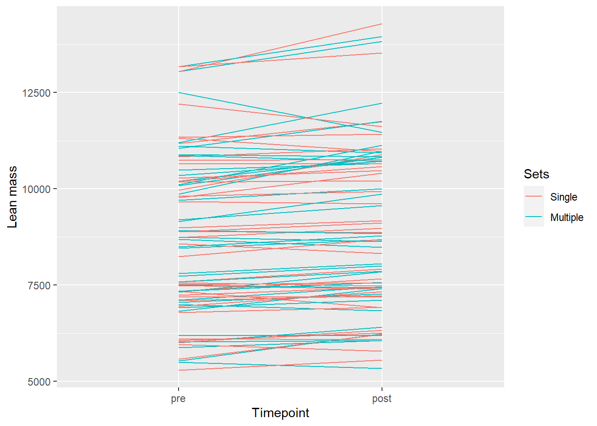
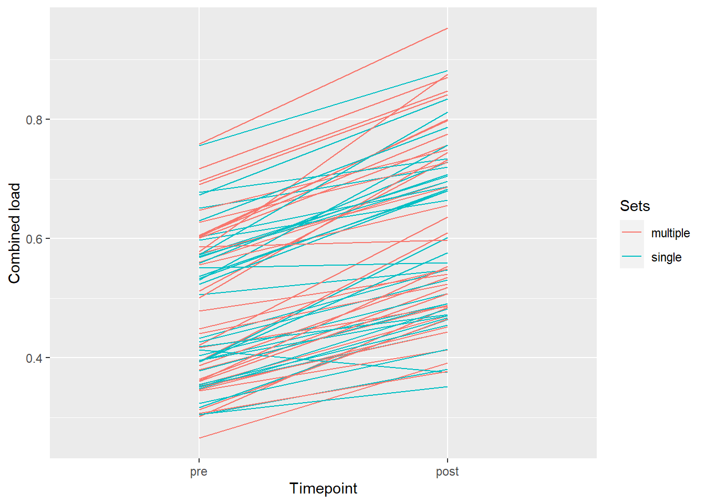

Assignment-5
Introduksjon
Treningsvolum og muskelstyrke er et mye omdiskutert felt, som det har blitt gjort mye forskning på. Felles for mye av de tidligere studiene på dette feltet er at de har fått ganske like resultater [SCHOENFELD et al. (2019)](HASS et al. 2000)(Heaselgrave et al. 2019). Disse resultatene har vist en signifikant økning i muskelhypertrofi blant mennesker i ulike grupper med bare et lavt styrketreningsvolum. Det vil si at det skjer en muskeløkning for både trente og utrente personer når de øker styrketreningsvolum.
Videre har forskningen også vist at det er en lite til ingen signifikant forskjell mellom de som trener ett sett med 8-12 repetisjoner og de som trener tre sett med like mange repetisjoner, men at det mest optimale er å ligge midt i mellom (Aube et al. 2020).
For å oppnå muskelhypertrofi, økning i muskelcellenes størrelse, blir styrketrening ansett som den mest effektive treningsformen (Souza, Barbalho, and Gentil 2020). Selv om det er en enighet at styrketrening er den beste formen for muskelhypertrofi er det fortsatt flere faktorer som kan påvirke muskelvekst. Faktorer som hvilken type styrketrening, volum, frekvens og intensitet kan påvirke muskelvekst (Souza, Barbalho, and Gentil 2020)
I denne studien vil formålet være å se hvordan singel sett eller flere sett (tre sett) kan være en påvirkningsfaktor for muskelhypertrofi.
Metode
Deltakere og studieoversikt
I denne studien var det 41 deltakere som ble rekruttert, og utvalget besto av både kvinner og menn. Alderen på deltakerne varierte fra 18-40 år. For selektering av utvalg ble det brukt inklusjonskriteriet og eksklusjonskriterier. Hovedkriteriene var at deltakerne måtte være ikke-røykere, de skulle ikke ha en intoleranse mot lokalbedøvelse, deretter ble treningshistorikk, eventuelle skader og medisiner brukt som ekskludering. Hvis noen av de overnevnte faktorene kunne påvirke styrketreningen ble deltakerne ekskludert. Underveis i studien ble hele syv deltakere utelukket, da de ikke oppfylte kravet om 85% deltakelse. Alle som deltok på studien hadde historikk fra sportslige aktiviteter, dette var dog ikke et kriterium.
Selve intervensjonen besto av 12 uker med fullkroppsstyrketrening. For målinger ble det utført muskelbiopsi i vastus lateralis før intervensjonen, i uke 2 og etter endt intervensjon. Muskelstyrke ble også målt ved baseline og ved endt intervensjon. På baseline var lite til ingen signifikant forskjell mellom de ulike gruppene som kunne vært en fordel eller ulempe i testen. Beinøvelsene som ble gjennomført under intervensjonen ble utført på hvert ben, dette for å kunne muliggjøre individuelle forskjeller i treningsvolum. Deltakerne fikk tilfeldig utdelt om de skulle gjennomføre ett sett eller multiple sett.
MRI-scan ble brukt både før og etter intervensjonen for å måle tversnittarealet til musklene i quadricepsgruppen (vastus lateralis, medialis, intermedius og rectus femoris). DXA-scan ble brukt for å måle kroppssammensetningen. Deltakeren måtte være fastende i 2 timer før både MRI-scan og DXA-scan, og unngå all form for hard fysisk aktivitet i 48 timer før.
Treningsprotokoller
For standardisering ble det laget et universelt oppvarmingsprogram. Dette programmet inneholdt 5 minutter med sykling, etterfulgt med 10 repetisjoner av øvelsene: pushups, situps, rygghev og knebøy. Alle øvelser ble utført med egen kroppsvekt. For de øvelsene som også var en del av intervensjonen ble de utført ekstra 10 repetisjoner med 50% vekt av 1RM.
Videre for standarisering ble alle beinøvelser utført med en gitt rekkefølge: beinpress, knefleksjon etterfulgt av kneekstensjon. Videre ble øvelsene bilateral benkpress, nedtrekk, skulderpress eller sittende roing implementert i programmet etter beinøvelsene. Mellom hver øvelse var det en pause på mellom 90-180 sekunder. For progresjon ble intensiteten økt underveis i intervensjonen.
1RM ble brukt for å beskrive maksimal styrke i beinpress og kneekstensjon. 1RM fant de etter progressiv økning av motstanden slik at deltakeren ikke klarte å løfte vekten mer. Alle deltakere fikk mellom 4-6 forsøk, med restitusjonstid mellom hvert sett.
Mellom hver treningsøkt var det en pause på minst 48 timer når det hadde vært en økt med maksimal intensitet og 24 timer mellom hver økt med submaksimal styrke. For å starte restitusjonen fikk deltakerne tildelt en standardisert drikke etter hver øvelse.
Analyse/Statistikk
Med mindre annet er beskrevet er all deskriptiv data presentert som et gjennomsnitt og standardavvik. For å måle effekten av antall sett (treningsvolum) på muskelhypertrofi og muskelstyrke ble det brukt lineære modeller. P-verdier er regnet ut ved hjelp av ANCOA-modell. Statistisk signifikans ble satt til α=0,05.
Resultater
Totalt førte den 12 uker lange intervensjonen i denne studien, med planlagt styrketrening, til en signifikant økning i muskelstyrke. Økningen hadde henholdsvis 31±14% single sett og 25±13% for multiple sett, noe som gir en P-verdi på (P\<0,001). Økningen i muskelvekst var også signifikant, på hele 2±4 for single sett og 3,3±4% for multiple sett (P\<0,001).
Muskelvekst pre- og posttest
Maksimal muskelstyrke

Diskusjon
I denne studien var det en større økning i muskelstyrke og muskelvekst fra pre- til posttest blant de som trente multiple sett enn de som trente single sett. Derimot ser vi også i figur 2 at både de som har trent med single sett og multiple sett har hatt en økning. Dette kan støttes av Hass et al. (2000) som også så en økning i muskelstyrke og muskelvekst i både singel- og multiple sett(HASS et al. 2000).
References
Aube, Daniel, Tanuj Wadhi, Jacob Rauch, Ashmeet Anand, Christopher Barakat, Jeremy Pearson, Joshua Bradshaw, Spencer Zazzo, Carlos Ugrinowitsch, and Eduardo O. De Souza. 2020. “Progressive Resistance Training Volume: Effects on Muscle Thickness, Mass, and Strength Adaptations in Resistance-Trained Individuals.” Journal of Strength and Conditioning Research 36 (3): 600–607. https://doi.org/10.1519/jsc.0000000000003524.
HASS, CHRIS J., LINDA GARZARELLA, DIEGO DE HOYOS, and MICHAEL L. POLLOCK. 2000. “Single Versus Multiple Sets in Long-Term Recreational Weightlifters.” Medicine & Science in Sports & Exercise, January, 235. https://doi.org/10.1097/00005768-200001000-00035.
Heaselgrave, Samuel R., Joe Blacker, Benoit Smeuninx, James McKendry, and Leigh Breen. 2019. “Dose-Response Relationship of Weekly Resistance-Training Volume and Frequency on Muscular Adaptations in Trained Men.” International Journal of Sports Physiology and Performance 14 (3): 360–68. https://doi.org/10.1123/ijspp.2018-0427.
SCHOENFELD, BRAD J., BRET CONTRERAS, JAMES KRIEGER, JOZO GRGIC, KENNETH DELCASTILLO, RAMON BELLIARD, and ANDREW ALTO. 2019. “Resistance Training Volume Enhances Muscle Hypertrophy but Not Strength in Trained Men.” Medicine & Science in Sports & Exercise 51 (1): 94–103. https://doi.org/10.1249/mss.0000000000001764.
Souza, Daniel, Matheus Barbalho, and Paulo Gentil. 2020. “The Impact of Resistance Training Volume on Muscle Size and Lean Body Mass: To Infinity and Beyond?” Human Movement 21 (4): 18–29. https://doi.org/10.5114/hm.2020.94199.